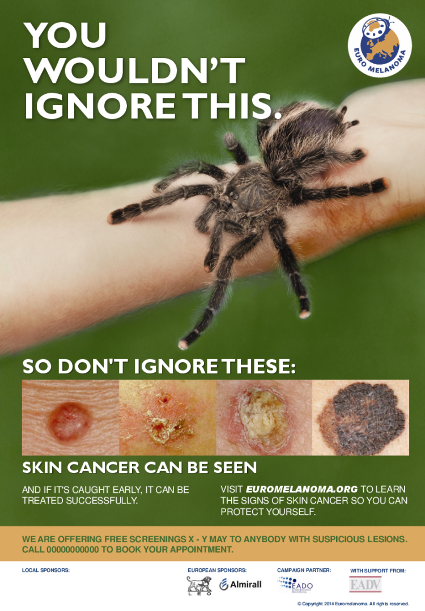

I nderuar profesionist i kujdesit shëndetësor,
Ju shihni më shumë lëkurën e klientëve tuaj sesa e shohin veten e
tyre. Prandaj, jeni në gjendje ideale për të identifikuar njollat
potencialisht të rrezikshme të lëkurës përpara se ato të bëhen
problem. Pra, nëse shihni diçka të dyshimtë, sigurohuni që të
rekomandoni që klienti juaj të vizitojë një dermatolog. Mund të
parandalojë probleme serioze shëndetësore dhe madje mund t'u shpëtojë
jetën.
Fletëpalosja e mëposhtme shpjegon se çfarë duhet kërkuar.
Për më shumë informacion rreth llojeve të ndryshme të njollave të
lëkurës, çfarë kuptimi kanë dhe si mund të trajtohen, mund t'i
referoni ato në faqen tonë kryesore: www.euromelanoma.org
Faleminderit që u bashkuat në luftën për të parandaluar kancerin e
lëkurës.
Download, read and share.
Ne kemi përgatitur materiale edukative. Do të gjeni këshilla të
dobishme.
Mos ngurroni t'i shkarkoni këto dokumente dhe t'i ndani me familjen,
miqtë, kolegët tuaj...
Njerëzit po udhëtojnë në zyrat tuaja, sallonet, korridoret, klubin
shëndetësor, dyqanet, dhomat e pritjes?
Puna juaj do t'ju çojë të shihni, prekni ose kujdeseni për lëkurën e
klientëve tuaj? Mos humbisni jashtë rrezikut.
Shkarkoni dhe printoni këtë poster.
Shkarkoni broshurën dhe mësoni se si të zbuloni lezionet në rrezik.
Kanceri i lëkurës është një nga kanceret më të zakonshme në botë. Lajmi i mirë është se zakonisht është i trajtueshëm nëse zbulohet herët - dhe ka gjëra që mund të bëjmë për ta parandaluar atë.
Shmangni ekspozimin e panevojshëm.
Kërkoni hije aty ku është e mundur dhe shmangni diellin e verës në
mes të ditës.
Përfshi ngjyra të errëta, mëngë të gjata, një kapelë me buzë të
gjerë dhe syze dielli të vlerësuara me rreze UV.
Për fëmijët, kërkoni veshje me mbrojtje të integruar nga dielli.
Kontrolloni që i juaji të ketë një faktor të lartë mbrojtjeje ndaj rrezeve UVA dhe UVB. Mos harroni se kremi kundër diellit hyn në fuqi rreth gjysmë ore pas aplikimit të tij dhe zgjat vetëm dy deri në tre orë.
Fëmijët janë në rrezikun më të madh të problemeve shëndetësore
afatgjata që lidhen me ekspozimin e pasigurt të diellit.
Loja jashtë është e rëndësishme, por nuk duhet ta lini kurrë një
fëmijë të digjet nga dielli.
Kontrolloni lëkurën tuaj një herë në muaj për njollat që:
Kjo është forma më pak e zakonshme e kancerit të lëkurës, por edhe
më e rrezikshmja. Mund të prekë njerëzit e çdo moshe, ndryshe nga
llojet e tjera që janë më të zakonshme tek të moshuarit.
Paraqitet si një njollë që bëhet me pigment të errët ose zhvillon
skaje të çrregullta ose ngjyra të ndryshme me kalimin e kohës, ose
si një gungë rozë ose e kuqe që rritet me shpejtësi. Mund të
përhapet brenda, prandaj kërkohet trajtim i menjëhershëm.
Kjo është forma më e zakonshme e kancerit të lëkurës, por edhe më pak e rrezikshme. Zakonisht paraqitet si një gungë e ngritur në ngjyrën e lëkurës me një buzë të shndritshme, si perla, një plagë që nuk shërohet ose një gungë paksa kore që rritet ngadalë me kalimin e kohës. Nëse nuk trajtohet, mund të ulcerojë dhe të pushtojë indet më të thella.
Kjo është forma e dytë më e zakonshme e kancerit të lëkurës, që shfaqet në zonat e lëkurës që kanë pasur shumë ekspozim ndaj diellit, si fytyra dhe skalpi. Paraqitet si një gungë kore e cila mund të rritet shpejt dhe të ulcerohet dhe të qajë. Mund të përhapet me shpejtësi, veçanërisht nëse në buzë, veshë, gishta dhe këmbë, ose në pacientë me imunosupresion. Trajtimi kirurgjik për heqjen e lezioneve është thelbësor.
Kjo ndodh më shpesh te njerëzit e moshës së mesme dhe të moshuar, në zonat më të ekspozuara ndaj diellit si fytyra, qafa, veshët, pjesa e pasme e duarve dhe skalpi. Ai paraqitet si njolla me luspa të kuqe-kafe dhe të vrazhda të lëkurës. Lezionet janë parakanceroze; në 10–15% të rasteve ato mund të zhvillohen në karcinoma skuamoze, ndaj duhen trajtuar për të parandaluar përparimin.
Është një formë e rrallë agresive e kancerit të lëkurës. Në Evropë shkalla e incidencës së raportuar është 0.59 për 100.000 dhe është një kancer i diagnostikuar kryesisht pas moshës 50 vjeç. Lezioni është asimptomatik, zmadhohet shpejt dhe është më i shpeshtë në pacientët me imunosupresion. Ky tumor mund të shkaktohet nga një poliomavirus ose nga ekspozimi ndaj ultravjollcës.
Për shkak se melanoma është veçanërisht serioze, duhet të njiheni me shenjat që duhen kërkuar.
ABCDE e melanomës mund t'ju ndihmojë ta zbuloni atë herët:
Beninje
Malinje
Beninje
Malinje
Beninje
Malinje
Beninje
Malinje
Para
Pas
Kontrolloni lëkurën tuaj një herë në muaj për ndonjë ndryshim ose
njollë të dyshimtë.
Kontrolli juaj duhet të mbulojë të gjithë trupin tuaj, përpara dhe
mbrapa, me theks të veçantë në zonat e ekspozuara ndaj diellit.
Qëndroni përpara një pasqyre të plotë me një pasqyrë dore për ato
vende të vështira për t'u arritur.
1. Shikoni fytyrën tuaj, duke përfshirë hundën, buzët, gojën dhe mbi dhe pas veshëve tuaj.
2. Kontrolloni skalpin tuaj, duke përdorur një krehër për të ndarë flokët. Nëse nuk keni shumë flokë, kontrolloni me kujdes të gjithë lëkurën e kokës.
3. Kontrolloni pjesën e përparme dhe të pasme të duarve tuaja dhe midis gishtërinjve.
4. Më pas përqendrohuni në qafën, gjoksin dhe pjesën e sipërme të trupit. Gratë, sigurohuni që të kontrolloni midis dhe poshtë gjoksit tuaj.
5. Përkulni bërrylin për të kontrolluar pjesën e sipërme të krahut dhe sqetullave.
6. Përdorni pasqyrën e dorës për të kontrolluar pjesën e pasme të qafës dhe shpinën, lart dhe poshtë.
7. Kontrolloni të pasmet dhe pjesën e pasme të këmbëve. Përfundoni duke kontrolluar shputat e këmbëve tuaja dhe midis gishtërinjve.
Ju jeni në rrezik më të lartë nëse:
Nëse vëreni një lezion të dyshimtë, është jetike që ta kontrolloni
atë nga një mjek ose mundësisht një dermatolog sa më shpejt të jetë
e mundur.
Kur trajtimi vonohet, gjendja përkeqësohet dhe në disa raste mund të
çojë në shpërfytyrim, komplikime dhe madje edhe vdekje. Mos lejoni
që vonesa të zvogëlojë shanset tuaja për një rezultat pozitiv.
Rregullat e arta janë: